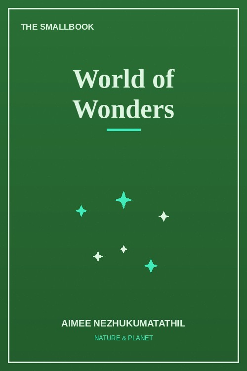

Library › Nature & Planet
World of Wonders - Summary & Key Lessons

In praise of fireflies, whale sharks, vampire squid and other astonishing neighbours.
📖 OPEN THE FULL INTERACTIVE BREAKDOWN →🌐 Read it in Hindi, Hinglish, Gujarati, Tamil & 22 more languages, with audio.
💡 The Big Idea
Each essay pairs a marvel of the natural world with a piece of Aimee Nezhukumatathil's life: growing up between cultures, falling in love, raising sons in Mississippi. The firefly teaches wonder as survival; the whale shark, gentleness at scale; the vampire squid, thriving in darkness without being monstrous. The book is an argument that attention to other species is not a hobby but a way of learning how to inhabit your own strangeness with grace.
🧠 The 8 Key Lessons
Lesson 1: Wonder Is a Survival Skill
Firefly and Throughout
Aimee Nezhukumatathil treats wonder not as decoration but as equipment: the child who learns to marvel at a firefly has practised the attention that later sustains love, patience and hope. Her essays keep returning to the idea that people who can be astonished on purpose are harder to make cynical, and cynicism, not sorrow, is the true anaesthetic of a life. The firefly is her first teacher because it asks nothing but darkness and patience.
📖 Example: She recalls childhood summers in which catching fireflies was the whole agenda, and sets that against adult summers scheduled to the minute. The essay's argument is physiological: a nervous system trained on small astonishments stays capable of large ones, including joy in other people. Read the full example →
⚡ Do this: Spend ten minutes this week in deliberate astonishment: one creature, plant or sky, watched until it does something you did not expect.
Lesson 2: The Vampire Squid Is Not a Monster
Vampire Squid
The vampire squid lives in oxygen starved darkness, eats falling debris, and defends itself with light and posture rather than violence; its Latin name sounds like a horror film and its life is a lesson in misjudged exteriors. Aimee Nezhukumatathil uses it to write about being misread herself, the exoticised Asian woman, feared or fetishised, neither seen. The essay teaches the reader to suspect their first taxonomy of anything, animal or human.
📖 Example: She pairs the squid's harmless strangeness with the microaggressions of being asked where she is really from, in the town she is from. Both errors come from the same shortcut: judging by silhouette. The cure, in biology and in society, is looking longer. Read the full example →
⚡ Do this: Catch one first taxonomy this week, of a creature or a person, and replace it with ten more minutes of looking.
Lesson 3: Raise Children Who Know Their Neighbours' Names
The Later Essays
Writing as a mother, Aimee Nezhukumatathil worries her sons will inherit screens instead of species. Her response is curriculum: name the birds at the feeder, the trees on the street, the phases of their own river. A child who can name thirty neighbours of other species lives in a populated world; a child who cannot lives in a backdrop. The book suggests loneliness is partly a failure of acquaintance, and acquaintance is teachable.
📖 Example: She describes her family's lists and rituals, first firefly of the year, the whale shark's spots memorised like a friend's face. The boys are being given what she was given: a world dense with characters, in which they are one species among wonders, not the audience of a show. Read the full example →
⚡ Do this: Learn five local names this week with your family: two birds, two trees, one insect. Use them until they feel like neighbours.
Lesson 4: The Corpse Flower Blooms on Its Own Schedule
Corpse Flower
The corpse flower blooms rarely, briefly, and smells of death to attract its pollinators; crowds queue for a stench on a timetable nobody controls. Aimee Nezhukumatathil uses it to write about her mother's illness and the years that would not arrange themselves around her wishes. The essay teaches a patience our productivity culture has forgotten: some things ripen in their own season, including grief, children and work, and the queue of witnesses must simply attend.
📖 Example: Botanical gardens announce the bloom like a royal birth and thousands come to stand in the smell together, delighted. She finds hope in that crowd: people will still gather, patiently, for a wonder that offers them nothing useful. Read the full example →
⚡ Do this: Name one thing in your life on corpse-flower timing. Stop forcing it this month; attend to it instead.
Lesson 5: The Whale Shark: Gentleness at the Largest Scale
Whale Shark
The largest fish on Earth eats the smallest, drifting with a mouth like a cathedral and no interest in harming anyone. Aimee Nezhukumatathil writes the whale shark against every assumption that size and power must mean danger, and pairs it with the large presences in her own life who chose gentleness. The essay quietly indicts a culture that equates magnitude with menace, in oceans and in people.
📖 Example: She describes swimming near one, outmatched in every physical dimension and perfectly safe, an experience of awe without fear that she ranks among her life teachers. The spots on its back, unique as fingerprints, give the boys in her family a friend they can re-identify across oceans. Read the full example →
⚡ Do this: Find the whale shark in your world: the large presence that chose gentleness. Thank them specifically this week.
Lesson 6: The Axolotl Smiles From the Brink
Axolotl
The axolotl, a Mexican salamander that never grows up, smiling, regenerative, is critically endangered in its home waters even as it fills laboratories and aquariums worldwide. Aimee Nezhukumatathil uses the paradox to write about what survives where: the beloved everywhere except home. The essay's ache is about belonging, hers as an immigrant's daughter and the axolotl's as a species, and about science that can regrow the animal's heart but not its lake.
📖 Example: Researchers prize the axolotl because it rebuilds its own body flawlessly, while Xochimilco canals shrink yearly. She holds the two facts in one hand and lets them argue, which is the book's method at its best. Read the full example →
⚡ Do this: Learn the home story of one beloved thing you consume, an animal, a food, a song. Let the knowledge change one habit.
Lesson 7: Attention Is the Conservation That Scales
Field Notes
Nezhukumatathil's essays insist the rarest species in most landscapes is human attention, and that its restoration precedes every other kind. A reader who can tell the fireflies apart has acquired constituents; statistics acquire faces. Deepening means treating wonder as field equipment rather than temperament: learn five names, watch one cycle complete, keep a list. The book's global bestseller status among exhausted adults suggests the diagnosis lands: what the technological century is starving is not information about nature but acquaintance with it.
📖 Example: Her firefly taxonomy, species distinguished by flash patterns courted in meadows worldwide, routinely sends readers outside the same evening with phone torches off. Local naturalists report the book's readers arriving at night hikes already converted, prepared by lyric essays to do the unfashionable thing: stand still in the dark, together, watching. Read the full example →
⚡ Do this: Stage one attention session this week: twenty minutes with one living neighbour, tree, bird, insect, tide, until you can describe it to a friend from memory alone.
Lesson 8: The Daughter of Immigrants Reads the Planet as Kin
Field Notes
Her Filipino and Indian heritage is not seasoning in these essays; it is method. The immigrant eye, trained to find the familiar inside the foreign, reads a Michigan winter or a Mississippi bayou as a place where belonging must be practised rather than inherited. Deepening means exporting the method to any landscape you feel exiled from. Kinship with the nonhuman turns out to be learnable by the same route as kinship with a new country: names first, stories second, loyalty at walking pace, defended when developers arrive with their own naming systems.
📖 Example: Her essay on the ribbon eel or the corpse flower delights in creatures her parents' archipelagos and her American present both claim, refusing the reader any single map of home. Critics noted the book quietly redrawing nature writing's demographics merely by existing joyfully, which her readings confirm: audiences arrive multigenerational and leave exchanging phenology tips like family recipes. Read the full example →
⚡ Do this: Learn the immigrant names and the local names for three species near you, in two languages if you can. Kinship multiplies with vocabulary; so does defence.
✅ 5-Step Action Plan
- Ten minutes of deliberate astonishment weekly.
- Replace one first taxonomy a week with longer looking.
- Learn five local species names with your household.
- Keep a first-of-the-year list: firefly, flower, migrant bird.
- Read one essay aloud; they are built for porches.
- Give a child a field guide before another game this year.
- Notice one darkness-dweller and ask what it eats and fears.
⚠️ When This Doesn't Work
It is a lyric essay collection, not a field guide; facts serve wonder here. Readers wanting identification keys will need Peterson beside Aimee Nezhukumatathil, which she would surely approve of.
💀 The Graveyard Proves It
💬 Best Quotes from World of Wonders
- “Wonder is a survival skill.”
- “The natural world is not a backdrop. It is a cast of teachers.”
- “Pay attention. Be astonished. Tell about it. She borrowed that, and so do we.”
Interactive version: mark lessons as read, listen in your language, share quote cards.